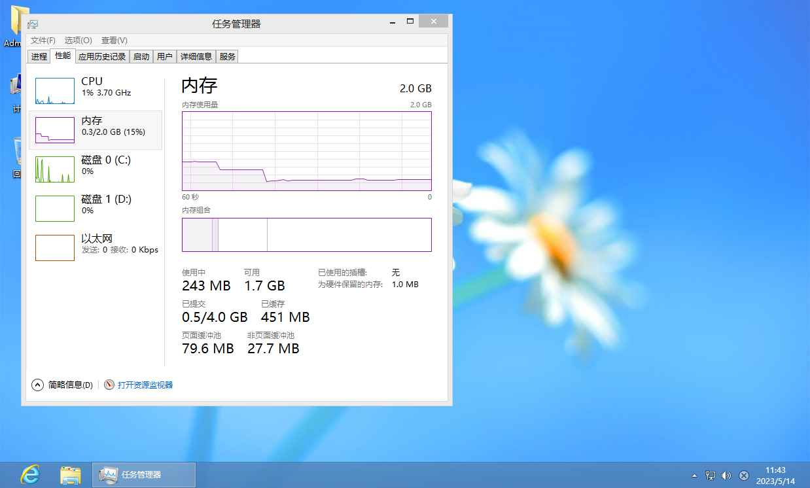
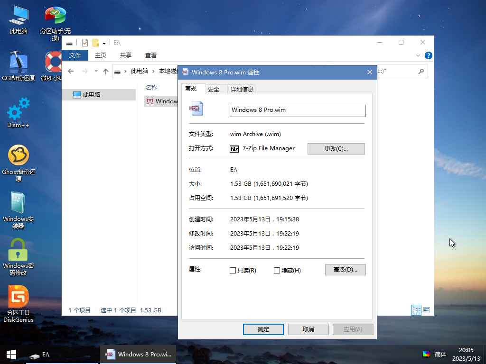

Windows 8
发布于2012年10月26日
系统介绍
Windows 8是微软公司于2012年发布的一款操作系统，它采用了全新的用户界面设计，被称为“Metro”。
Windows 8还引入了多任务处理功能、手势控制等新特性，让用户能够更方便地使用电脑。
总的来说，Windows 8.0是一款相对不错的操作系统，它的设计理念和新增功能都为用户带来了更好的使用体验。如果你正在寻找一款全新的操作系统，那么不妨试试Windows 8.0吧！
图片展示



- 下载 （提取码:mw80）
本站所有系统镜像及软件均来源于互联网，仅为个人学习测试使用，请在下载后24小时内删除。版权归原作者所有，不得用于商业用途，否则后果自负！请支持原版系统及软件！
© 2024 Virtual-Z All rights reserved.